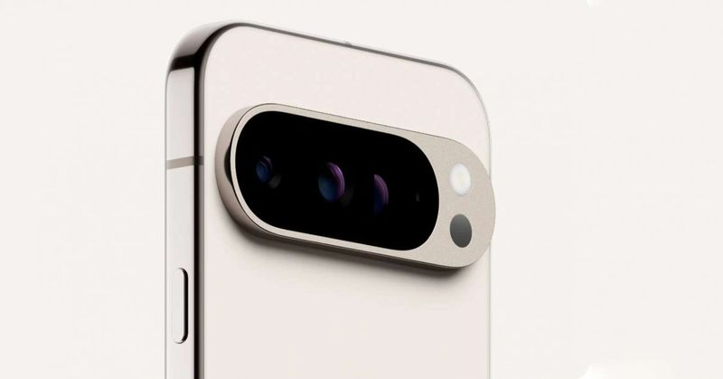
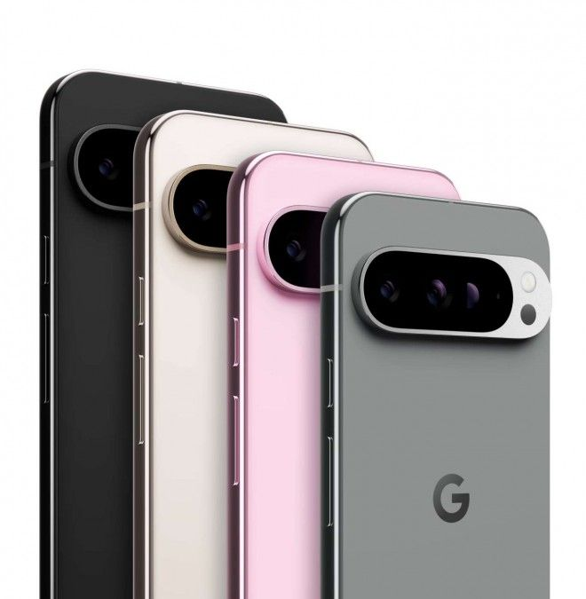

Google Pixel 9
Google resmi merilis Pixel 9, Pixel 9 Pro dan Pixel 9 Pro XL setelah bocorannya menyeruak sejak beberapa bulan lalu. Ketiga HP mengedepankan kemampuan fitur AI Gemini,
berikut spesifikasi dan harganya jika berniat membelinya...
Pixel 9 dan 9 Pro punya kesamaan ukuran layar, yakni 6,3 inch. Sementara Pixel 9 Pro XL bentangannya mencapai 6,8 inch.
Ketiganya disokong chipset Google Tensor G4 yang mendukung koneksi 5G dan chip keamanan Titan M2. Pixel 9, Pixel 9 Pro dan Pixel 9 Pro XL dapat melakukan panggilan darurat SOS melalui satelit.
Google membuat semua HP barunya dengan tepian kotak. Bagian depan dan belakangnya dilapisi kaca Corning Gorilla Glass Victus 2 dan memiliki sertifikat IP68 untuk ketahanan debu dan air. Pixel 9 punya bagian belakang kaca yang dipoles dengan bingkai logam matte. Pixel 9 Pro series hadir dengan bagian belakang matte yang halus dengan bingkai logam yang glossy.
Ketiga HP punya kamera utama 50 MP yang dibekali OIS dan kamera lensa ultra-wide 48 MP.. Pada Pixel 9 terpasang kamera selfie 10,5 MP. Sementara Pixel 9 Pro dan Pixel 9 Pro XL punya kamera telephoto periskop 48 MP yang dibekali OIS dan kamera selfie 48 MP.
Google memberikan banyak fitur fotografi. Selain Portrait Mode, Face Unblur, Long Exposure, Action Pan, Real Tone, Panorama, Top Shot, Frequent Face, diberikan dukungan perekaman video 8K pada 30 FPS yang didukung oleh Video Boost, Super Res Zoom hingga 20x di Night Sight Video di Pixel 9 Pro dan Pixel 9 Pro XL.
Salah satu fitur baru yang menarik adalah Add Me. Fitur ini memungkinkan kamu mengambil foto grup, lalu bertukar tempat dengan seseorang dan mengambil foto kedua dengan kamu di dalamnya. Ini berguna saat tengah pergi ke suatu tempat namun tidak ada orang yang bisa dimintai tolong untuk memotret grup.
Reimagine di Magic Editor dapat membuat apa pun ketika kamu menuliskan apa yang diinginkan. Auto Frame di Magic Editor menggunakan Gemini untuk menghasilkan opsi untuk foto yang telah kamu ambil dengan lebih baik. Lalu ada Zoom Enhance secara cerdas mengisi celah antara piksel dan memprediksi detail halus untuk hasil zoom berkualitas tinggi.
Pixel 9, Pixel 9 Pro dan Pixel 9 Pro XL juga diberikan aplikasi Screenshot yang menggunakan Gemini untuk mengidentifikasi konten di semua tangkapan layar, sehingga kamu dapat menggunakannya untuk mengingat informasi di dalamnya.

Spesifikasi Google Pixel 9
Layar: 6.3-inch (1080 x 2424 pixels) FHD+ AMOLED display with 60 / 120 Hz refresh rate, up to 2700 nits peak brightness, Corning Gorilla Glass Victus 2 protection
Chipset: Google Tensor G4 processor with Titan M2 security chip
RAM: 12GB LPDDR5X
Memori internal: 128GB / 256GB UFS 3.1
Android 14 dengan dukungan update hingga 7 tahun
SIM: nano + eSIM
Kamera belakang: 50MP dengan ukuran 1/1.31″ sensor Samsung GNK, OIS, LDA Samsung GN2 sensor, f/1.68 aperture; ; lensa ultra-wide 48MP 125° dengan 1/2.51″ sensor Sony IMX858, f/1.7 aperture, macro option, 10-bit HDR recording, Cinematic Blur, high resolution 8x zoom, 4K 60 fps video recording
Kamera depan: 10.5MP 92.8° dengan ukuran 1/3″ sensor Samsung 3J1, f/2.2 aperture, 4K 60 fps video recording, face unlock
Fitur: Ultrasonic In-display fingerprint scanner, USB Type-C audio, Stereo speakers, Dust and Water-resistant (IP68)
Dimensis:152.8x 72x 8.5mm;Berat: 198g
Koneksi: 5G SA/NA, 4G VoLTE, Wi-Fi 7 802.11be (2.4/5 GHz), Bluetooth 5.3 LE, GPS, USB Type C 3.2, NFC, Satellite SOS (US Only)
Baterai: 4700mAh dengan dukungan 27W wired fast charging, 15W wireless charging

Harga
Google mulai membuka pemesanan di sejumlah negara pada 14 Agustus. Pixel 9 dan Pixel 9 Pro XL mulai dijual 22 Agustus, sementara Pixel 9 Pro menyusul 9 September. Setiap pembelian Pixel 9 Pro series diberikan setahun langganan gratis Gemini Advanced.
Pixel 9 hadir dalam varian warna Obsidian, Porcelain, Wintergreen dan Peony. Sementara Pixel Pro series hanya ada Obsidian, Hazel, Rose Quartz, dan Porcelain.
Untuk harga di AS sebagai berikut:
Google Pixel 9 12/128 GB USD 799 atau Rp 12,6 juta
Google Pixel 9 12/256 GB USD 899 atau Rp 14,2 juta
Google Pixel 9 Pro 16/128 GB USD 999 atau Rp 15,7 juta
Google Pixel 9 Pro 16/256 GB USD 1.099 atau Rp 17,3 juta
Google Pixel 9 Pro 16/512 GB USD 1.219 atau Rp 19,2 juta
Google Pixel 9 Pro XL 16/128 GB USD 1.099 atau Rp 17,3 juta
Google Pixel 9 Pro XL 16/256 GB USD 1.199 atau Rp 18,9 juta
Google Pixel 9 Pro XL 16/512 GB USD 1.319 atau Rp 20,7 juta
Google Pixel 9 Pro XL 16/1 TB USD 1.549 atau Rp 24,4 juta
Samsung S10
Samsung S10, yang diluncurkan pada tahun 2019, sempat menjadi salah satu primadona smartphone di masanya. Dengan desain yang menawan, layar yang jernih, dan performa yang tangguh, S10 menarik minat banyak pengguna. Namun, tiga tahun telah berlalu sejak peluncurannya. Di tahun 2024 ini, pertanyaan yang muncul adalah: apakah Samsung S10 masih Layakkah Dibeli di Tahun 2024?...
all new nma-x turbo 2024
Inovasi terus dilakukan Yamaha Indonesia Motor Mfg. (YIMM). Setelah dinanti dan bincang khalayak. Mereka merilis skutik premium di jajaran Maxi Yamaha, yaitu Nmax “Turbo” 2024. Peluncuran perdana secara global ini berlangsung di Kemayoran, Jakarta. Perusahaan sengaja memberi tanda petik di kata Turbo, karena memang sebatas istilah untuk menambah power. Bukan alat induksi angin bertekanan seperti di dalam mesin mobil...
all new zx25rr
Kawasaki ZX-25RR All New adalah sepeda motor sport dengan mesin 250cc inline-4 yang memberikan performa tinggi dan suara yang mengesankan. Dengan desain aerodinamis, teknologi terbaru, dan fitur canggih, motor ini dirancang untuk memberikan pengalaman berkendara yang mendebarkan...
Stylo 160
Kehadiran Honda Stylo 160 memberikan alternatif baru bagi konsumen Indonesia yang menggemari skuter matik bergaya retro. Motor baru ini akan bersaing dengan model-model yang telah ada lebih dulu, seperti Yamaha Grand Filano dan produk-produk entry level Vespa. Baca artikel detikoto, "Review Honda Stylo 160: Apa Saja Kelebihannya?"
Tentang Kami
iNTech Web adalah Web teknologi yang berfokus pada informasi seputar technologi, dan otomotif. Kami akan selalu berusaha untuk menyajikan konten yang informatif dan menarik bagi pembaca.
Kami percaya teknologi dapat meningkatkan kualitas hidup dan kami ingin berkontribusi dalam perubahan ini. Dengan menyajikan informasi terbaru dan akurat, kami berharap membantu pembaca memilih teknologi yang tepat untuk kebutuhan mereka.
Tim Kami
Kami memiliki tim berpengalaman dan berdedikasi di bidang teknologi dan jurnalistik, yang terdiri dari:
- Choirul Indra Saputra - Pemimpin Redaksi
- Choirul Indra Saputra - Penulis
- Choirul Indra Saputra - Desainer Grafis
Kontak Kami
Jika Anda memiliki pertanyaan, saran, atau ingin bekerja sama dengan kami, silakan hubungi kami melalui:
Email: Saputraindra2007@gmail.com
Alamat: SMKN 1 WONOSOBO